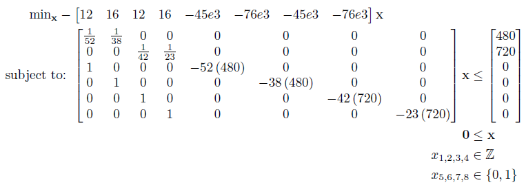

Mixed Integer Linear Program (MILP)
Introduction
A mixed integer linear program has the following form:
Where f is a n x 1 vector containing the linear objective function, which is subject to the following constraints:
Linear Inequalities*
A is a m x n
sparse matrix, b is a m x 1 vector
Linear Equalities*
Aeq is a k x n sparse matrix, beq
is a k x 1 vector
Decision Variable Bounds
lb and ub are n x 1 vectors,
where -inf or inf indicate an unbounded lower or upper bound, respectively
Integer Constraints
xi are decision variables
which must be a integer number (...-2, -1, 0, 1, 2...)
Binary Constraints
xj are decision variables which must be a binary number (0,1), where
i ≠ j.
The goal is to minimize the objective function by selecting a value of x that also satisfies all constraints.
*Your problem description will either use Linear Inequalties and Linear Equalities OR Linear Row Constraints. See the constraint information page.
Example Problem[3]
A toy manufacturer is planning to produce new toys. The setup cost of the production facilities and the unit profit for each toy are given below:
| Toy | Setup Cost ($) | Profit per toy($) |
| 1 | 45000 | 12 |
| 2 | 76000 | 16 |
The company has two factories that are capable of producing these toys. In order to avoid doubling the setup cost only one factory could be used. The production rates of each toy are given below (in units/hour):
| Toy 1 | Toy 2 | |
| Factory 1 | 52 | 38 |
| Factory 2 | 42 | 23 |
Factories 1 and 2 have 480 and 720 hours of production time available respectively for production of these toys. The manufacturer wants to know which of the new toys to produce, where and how many of each so as to maximise the total profit.
Write the equations for this problem assuming the following decision variable name strategy:
| Production Toy 1 | Production Toy 2 | Make Toy 1 (0,1) | Make Toy 2 (0,1) | |
| Factory 1 | x11 | x12 | f11 | f12 |
| Factory 2 | x21 | x22 | f21 | f22 |
x = [x11 x12 x21 x22 f11 f12 f21 f22]T
The objective function is to maximize the return, thus we negate our objective:
The constraints for production limits are as follows:
And finally the constraints for enforcing a setup cost are:
The objective and constraints can now be written in standard form:

This can be solved using the OPTI Toolbox as follows:
% Objective
f = -[12;16;12;16;-45000;-76000;-45000;-76000];
% Constraints
A = sparse([1/52 1/38 0 0 0 0 0 0;
0 0 1/42 1/23 0 0 0 0;
1 0 0 0 -52*480 0 0 0;
0 1 0 0 0 -38*480 0 0;
0 0 1 0 0 0 -42*720 0;
0 0 0 1 0 0 0 -23*720]);
b = [480;720;0;0;0;0];
lb = zeros(8,1);
int = 'IIIIBBBB';
% Build OPTI Problem
Opt = opti('f',f,'ineq',A,b,'lb',lb,'int',int)
% Solve
x = solve(Opt)
And the solution is:
x =
24960
0
30240
0
1
0
1
0
Indicating Factory 1 & 2 will both be making Toy 1, with both Factories making their respective production limits of Toy 1.
Copyright © 2011-2013 Jonathan Currie (I2C2)